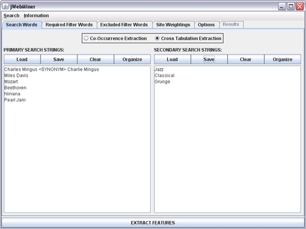

| Search Words Panel |
|---|
The Search Words Panel is a GUI panel allowing users to select the search strings for which cultural features are to be extracted from the web.
Co-occurrence vs. Cross Tabulation Analysis
There are two basic types of automated web searches that can be performed. The first, a "co-occurrence extraction" (see Figure 1), means that the relative co-occurrence of each line in the PRIMARY SEARCH STRINGS text area on the internet is measured pairwise when combined with every other line in the same text area. The SECONDARY SEARCH STRINGS text area is ignored in co-occurrence analyses. This is useful for measuring the relative similarity between each of the primary search strings. For example, in the case of Figure 1 hit counts would be found for all occurrences of both Pearl Jam and Nirvana on the same web page, for both Pearl Jam and Beethoven, for both Pearl Jam and Mozart, and so on until hit counts for all possible pairs of primary search strings had been extracted.
Figure 1: A screenshot of the Search Words Panel showing search strings for a potential co-occurrence extraction that will compare the relative pairwise similarity between the names of six different musical artists.
The second type of search, "cross tabulation extraction" (see Figure 2), involves calculating the relative pairwise internet co-occurrence of each line in the PRIMARY SEARCH STRINGS text area with every line in the SECONDARY SEARCH STRINGS text area. This is useful in categorizing terms. For example, in the case of Figure 2 hit counts would be found for all occurrences of both Pearl Jam and Jazz on the same web page, for both Pearl Jam and Classical, for both Pearl Jam and Grunge, and so on until all possible pairs of one primary search string and one secondary search string been searched.

Figure 2: A screenshot of the Search Words Panel showing search strings for a potential cross tabulation extraction that will compare the relative associations between each name of six different musical artists and each of three different genres of music.
The two radio buttons at the top of the Search Words Panel allow users to select which one of these two types of analyses they wish to perform. Selecting the Co-occurrence Extraction radio button will temporarily disable the SECONDARY SEARCH STRINGS text area, as it is irrelevant for this type of analysis.
Synonyms
It is possible to define "synonyms" between different search strings so that they will be considered equivalent and their results will be combined during feature value calculations. This can be done for both primary search strings and secondary search strings.
Synonyms can be useful when dealing with search strings that are effectively equivalent to other terms, and it is desirable to avoid missing web pages that might contain one synonym but not the other. For example, the class names "R and B" and "RnB" can be usefully combined.
Synonyms can be defined by entering a " <SYNONYM> " tag between words or sets of words in one of the text areas. It is possible to define more than two synonyms in a set if desired.
Figure 1 provides an example of how synonyms can be entered. Both "Charlie Mingus" and "Charles Mingus" refer to the same artist, so the hits for both will be combined during feature extraction.
The Text Areas
The PRIMARY SEARCH STRINGS text area on the left and the SECONDARY SEARCH STRINGS text area on the right allow users to enter the search terms that they wish to use. These may be entered by directly typing in or editing the text areas or by copying and pasting existing text into them. Search terms may also be added using the Load button corresponding to the appropriate text area, which parses strings from an existing text file and appends them to the appropriate text area.
Note that each search string may contain multiple words and that each line in a text area corresponds to a separate search string.
Note that when a feature extraction is executed with the EXTRACT FEATURES button that the contents of the text fields are pre-processed before being used in searches such that blank lines are removed, duplicate lines are removed and the contents are sorted alphabetically by line.
Buttons Above the Text Areas
The Load button for each text area allows users to parse the contents of a file and append them to the existing content of the text area (existing contents are not replaced). Information can be parsed from newline delimited text files, from class names found in Weka ARFF or ACE XML files, or from a variety of different fields of Apple iTunes XML files. In the case of Apple iTunes XML files, users are asked to choose which field they want to parse search strings from.
The Save button for each text area will bring up a file chooser allowing users to enter a file path. The contents of the text area will be saved as a text file to the chosen location.
The Clear buttons for each text area erase all of the contents of the corresponding text area.
The Organize buttons for each text area cause the contents of the corresponding text area to be sorted alphabetically by line, with empty lines and duplicate lines removed.